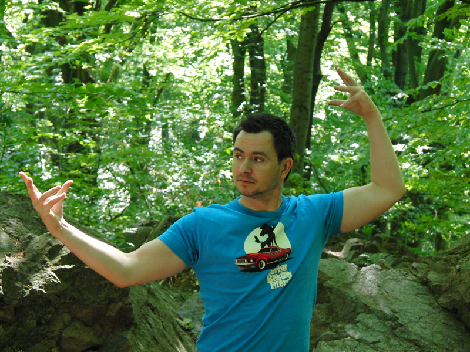
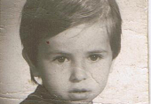
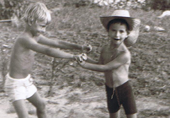
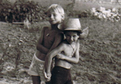

Preparation
Every scene begins with a clear idea, precise planning and consideration for everyone involved.
From Dresden and circus school to film, stage and international productions.

Movement has been the common thread since childhood. Training at the State Ballet School and School of Circus Arts in Berlin laid the foundation, with a specialisation as a trampoline stunt performer.
This developed into a versatile profile spanning stunts, acting, stage combat, horse work, comedy and circus artistry. The work combines technical preparation with the energy of a live moment.
I was born on 13 February 1980 in Dresden. My mother, Irina Simeonow (née Schönball), was an active athlete and coach in sports acrobatics and trampoline at PSV Dresden. My father, Stefan Iliev Simeonow, worked as a professional driver and later for a furniture removal company. My brother Marko attended the Dresden sports school and moved to the State Ballet School and School of Circus Arts in Berlin in 1989. He specialised in teeterboard acrobatics, as well as the wheel of death, trampoline and Globe of Speed.
I spent my first six school years at Dresden’s 35th secondary school, followed by four years at the 36th. Looking for new challenges, I began training as a circus artist at the State Ballet School and School of Circus Arts. Alongside my training, I learned to play guitar and explored magic. Becoming a stuntman had been my dream since I was eight. After German reunification, I wrote to Action Concept at the age of twelve, but was told I was still too young – one more reason to take the circus school route.
After my engagement at the Friedrichstadtpalast Berlin in 2000/2001, I began compulsory military service in January 2002 with the 2nd Paratrooper Battalion 373 in Doberlug-Kirchhain. In 2004, I met the “Artist of Stunt” team. Two years of intensive stunt training, performances and shows followed. In 2006, I founded the “Action Artist” stunt team, bringing together circus artists and extreme artists in equal measure to develop a new niche. The team disbanded in 2009, but many of the friendships and collaborations continue today.
I have been a regular rider with Globe of Speed since 2005 and a wheel-of-death performer since 2008. In 2003, I spent a full year working as a teeterboard acrobat and high diver. I began working as an action actor in 2006 and have also worked as a magician since 2000. Being able to learn and recall movement sequences quickly helped me establish myself in many genres.



Every scene begins with a clear idea, precise planning and consideration for everyone involved.
Action works when character, movement and story come together.
Good action comes from collaboration between the director, crew, performers and specialists.